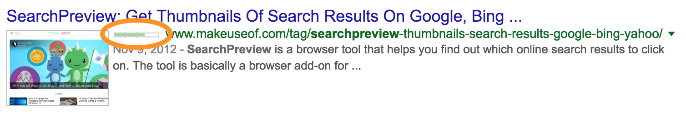
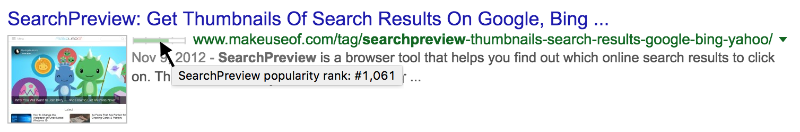

This new SearchPreview feature shows a bar for each search result indicating the popularity rank of the site,
circled in the following image:

A full green bar means very popular, an empty white bar means not so popular. If you mouse over the bar you
can see the exact rank of a site (#1 is the best popularity):

The site popularity ranks are provided by Alexa Internet Inc., an amazon.com company. To receive
the site popularity ranks of the sites in the search results page SearchPreview executes a HTTPS
request to widgets.alexa.com. In addition to the normal HTTPS protocol data (see http://www.w3.org/Protocols/rfc2616/rfc2616.html)
this request contains the referrer and the URLs of the sites in
the search results page. The response contains the rank values for the search results. Please
see the Alexa Internet Privacy Policy at http://www.alexa.com/help/privacy for more
information concerning the privacy of the data transferred in this request.
You can disable the Site Popularity Rank feature in the SearchPreview options area, in this case no data is
sent to / requested from widgets.alexa.com.
Enable the 'Site Popularity Rank' feature (you can always change this later in SearchPreview's options)